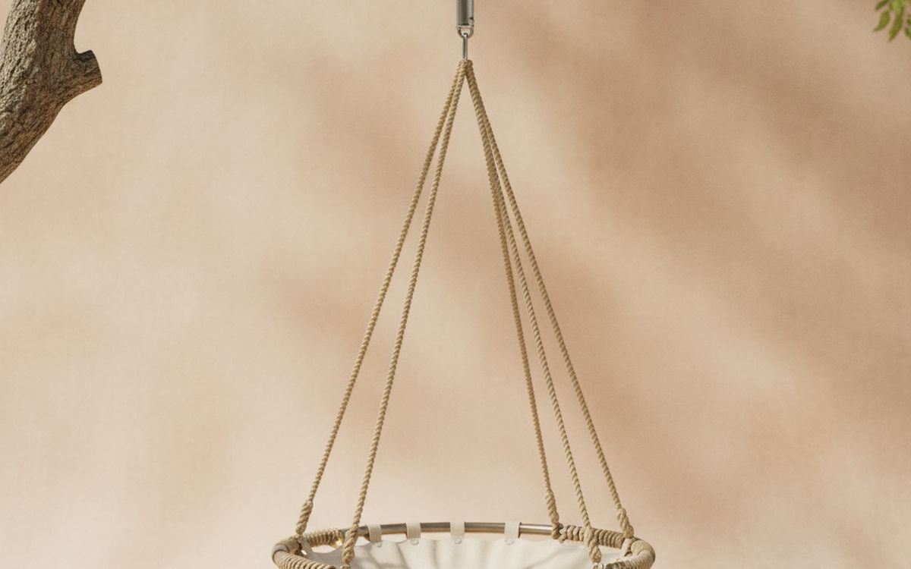
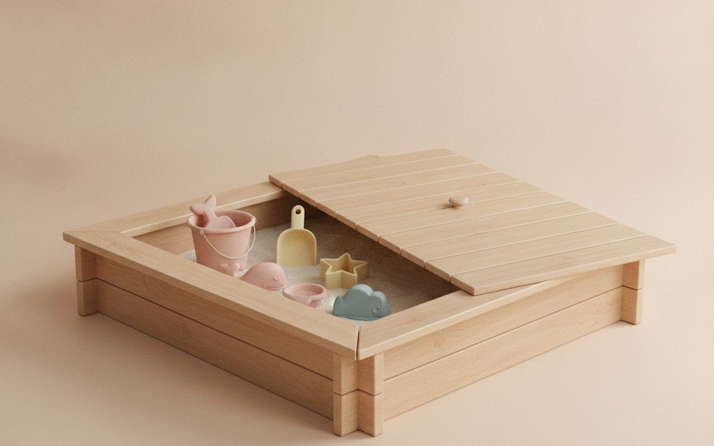
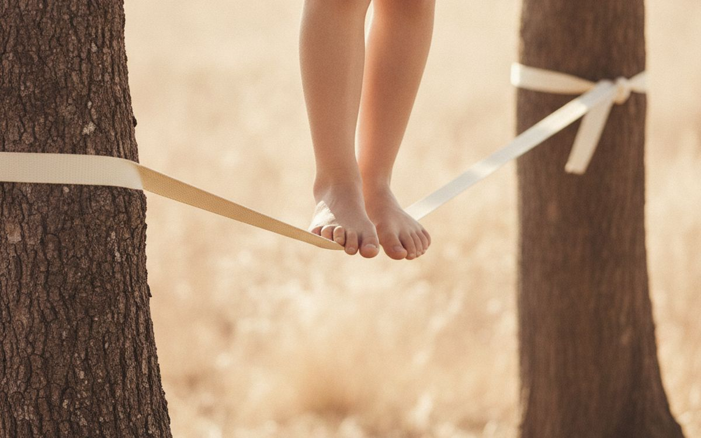
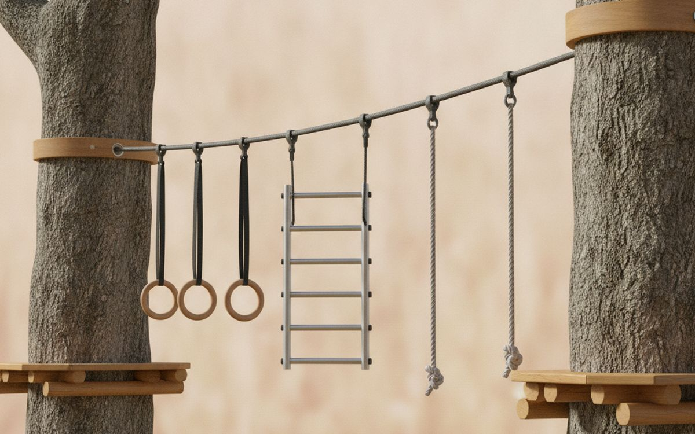
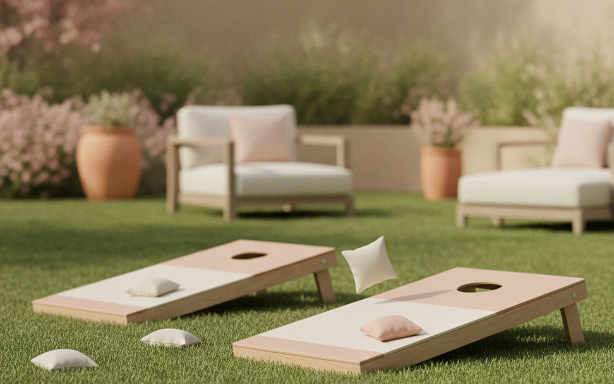
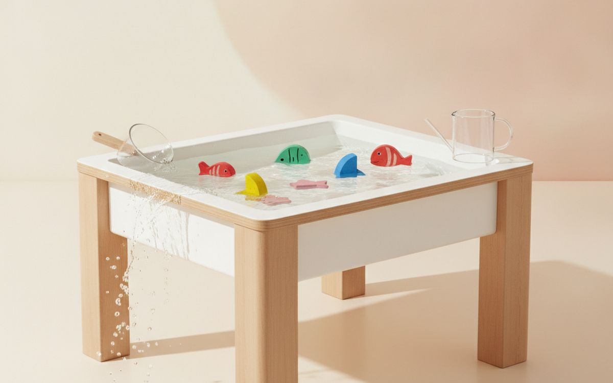
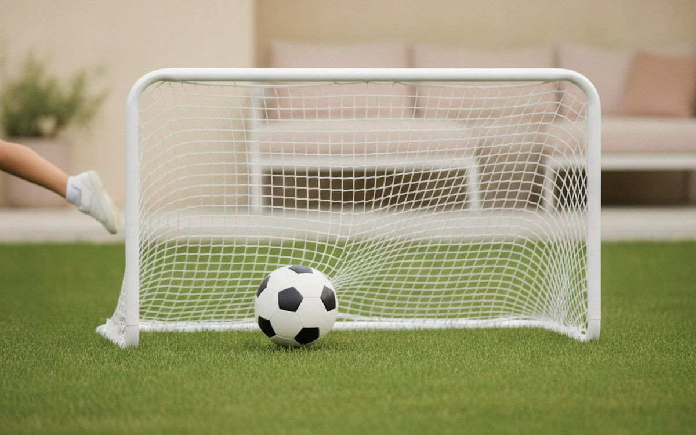
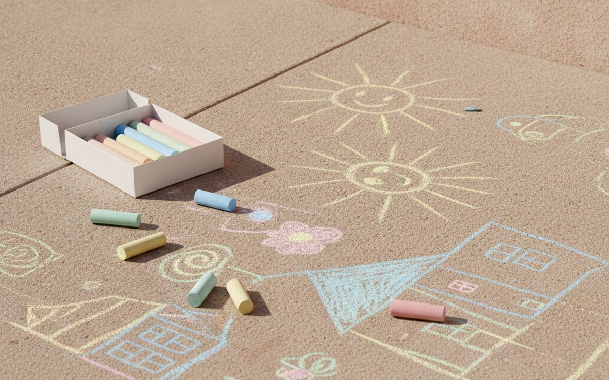
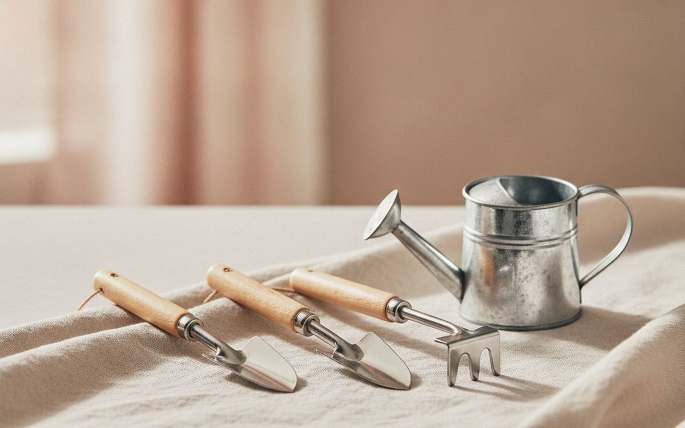
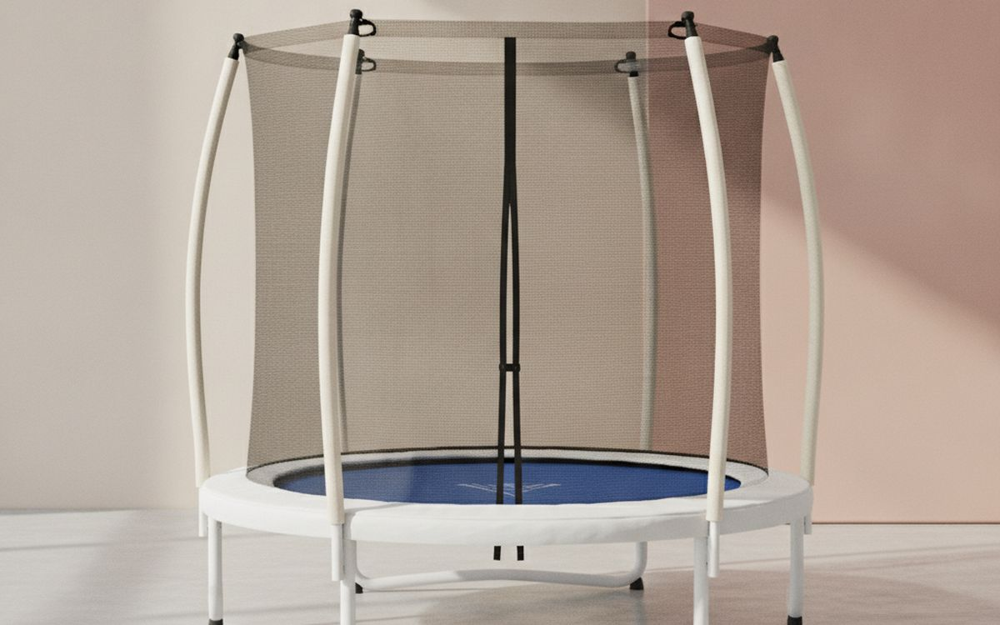

Big backyard purchases often disappoint. The expensive plastic playset gets used intensely for a month, then becomes furniture. Meanwhile, a simple swing, a pile of sand or a ball gets played with for years. What keeps kids outside is variety, movement and the chance to invent their own games.
This list is ordered by how much outdoor play each item creates for the money and space. Most work in small yards. Safety notes are included where they matter.
Prices below are approximate street prices at the time of writing and move around constantly, especially during sale events. Treat them as a rough band for budgeting, not a quote. Always check the live listing before you buy.
Kurz gesagt
A saucer tree swing
The best play per dollar
Hinweis. Die Links auf dieser Seite sind Affiliate-Links. Wenn Sie darüber kaufen, erhalten wir unter Umständen eine Provision ohne Mehrkosten für Sie. Das beeinflusst weder die Auswahl noch die Reihenfolge dieser Liste.
Wie wir ausgewählt haben
These picks come from child development and playground safety guidance, parent communities and long-run owner reports, cross-checked against current retail listings. We have not personally tested every item here. Follow weight limits and installation instructions, supervise young children, and place equipment over soft ground.
Auf einen Blick
Die Preise sind Näherungswerte zum Zeitpunkt der Erstellung und ändern sich häufig.
Die Empfehlungen

01 · The best play per dollarA saucer tree swing
A round saucer swing holds one or several kids, works for toddlers to teens, and spins as well as swings. It hangs from a sturdy tree branch or a frame. Kids use it to swing, lie back and chat, or spin until dizzy. Check the weight rating and use proper tree straps that do not damage the tree. Inspect ropes each season. The case for it: used by all ages, several kids at once, and simple to install. The trade-off is real: needs a strong branch or frame and check ropes regularly, so weigh that against how often it would actually get used.
$40-80Der Kompromiss: Needs a strong branch or frame
Warum es hier steht
- Used by all ages
- Several kids at once
- Simple to install
Gut zu wissen
- Needs a strong branch or frame
- Check ropes regularly

02 · Toddlers and preschoolersA sandpit with a cover
Sand is one of the most open-ended play materials there is: digging, building, pouring and imaginative games. A sandpit with a cover keeps out rain, leaves and animals. Use washed play sand. A few buckets, spades and kitchen utensils are enough toys. The case for it: hours of open play, great for fine motor skills, and cover keeps it clean. The trade-off is real: sand gets tracked indoors and must be covered to keep animals out, so weigh that against how often it would actually get used. For $40-100, it is a small, low-risk addition to the list rather than a centrepiece purchase you need to think hard about.
$40-100Der Kompromiss: Sand gets tracked indoors
Warum es hier steht
- Hours of open play
- Great for fine motor skills
- Cover keeps it clean
Gut zu wissen
- Sand gets tracked indoors
- Must be covered to keep animals out

03 · Balance for older kidsA slackline kit
A slackline strung low between two trees builds balance, core strength and concentration. Kits with a training line overhead are easier for beginners. Keep it low, about knee height, over soft ground. Use tree protection to avoid damaging bark. The case for it: builds balance and focus, cheap, and challenging for all ages. The trade-off is real: needs two sturdy trees and keep low over soft ground, so weigh that against how often it would actually get used. Priced around $30-60, it is easy to justify even if it only ends up getting occasional rather than daily use.
$30-60Der Kompromiss: Needs two sturdy trees
Warum es hier steht
- Builds balance and focus
- Cheap
- Challenging for all ages
Gut zu wissen
- Needs two sturdy trees
- Keep low over soft ground

04 · Climbing and swingingA backyard ninja line or obstacle course
A ninja line strings rings, bars and ropes between two trees for swinging and climbing. It builds strength and confidence, and kids set challenges for each other. Follow weight limits and install over soft ground. The case for it: builds strength, endless challenges, and adjustable. The trade-off is real: requires sturdy trees and soft landing and not for very young children, so weigh that against how often it would actually get used. At $50-120, it earns its place on this list without asking for a big up-front commitment either way. As with anything on this list, check the exact listing details and current price before adding it to a cart.
$50-120Der Kompromiss: Requires sturdy trees and soft landing
Warum es hier steht
- Builds strength
- Endless challenges
- Adjustable
Gut zu wissen
- Requires sturdy trees and soft landing
- Not for very young children

05 · Family gamesOutdoor games set (cornhole, ladder toss)
Lawn games like cornhole, ladder toss and giant Jenga get the whole family outside, and adults play too. They are easy to learn and good for barbecues. Choose sturdy boards that survive weather. The case for it: whole-family fun, easy to learn, and great for gatherings. The trade-off is real: takes storage space and cheap boards warp, so weigh that against how often it would actually get used. For $30-80, it is a small, low-risk addition to the list rather than a centrepiece purchase you need to think hard about. It is a minor purchase in the context of the whole set-up, but the kind that is easy to regret skipping once you notice the gap.
$30-80Der Kompromiss: Takes storage space
Warum es hier steht
- Whole-family fun
- Easy to learn
- Great for gatherings
Gut zu wissen
- Takes storage space
- Cheap boards warp

06 · Hot daysA water table or sprinkler
On hot days, water play keeps kids cool and busy. Water tables suit toddlers; sprinklers and splash pads suit bigger kids. Always supervise water play and empty containers after use. The case for it: keeps kids cool, hours of play, and cheap. The trade-off is real: only useful in warm weather and supervise water play, so weigh that against how often it would actually get used. Priced around $20-60, it is easy to justify even if it only ends up getting occasional rather than daily use. None of that makes it essential for everyone reading this, only worth knowing about if the description above matches how you actually use the space.
$20-60Der Kompromiss: Only useful in warm weather
Warum es hier steht
- Keeps kids cool
- Hours of play
- Cheap
Gut zu wissen
- Only useful in warm weather
- Supervise water play

07 · Sport loversA soccer goal or basketball hoop
For kids who love sport, a pop-up soccer goal or adjustable basketball hoop gets them practising daily. Pop-up goals fold away; adjustable hoops grow with the child. The case for it: daily practice, grows with the child, and active play. The trade-off is real: needs space and flat ground and portable hoops need weighting, so weigh that against how often it would actually get used. At $40-150, it earns its place on this list without asking for a big up-front commitment either way. As with anything on this list, check the exact listing details and current price before adding it to a cart.
$40-150Der Kompromiss: Needs space and flat ground
Warum es hier steht
- Daily practice
- Grows with the child
- Active play
Gut zu wissen
- Needs space and flat ground
- Portable hoops need weighting

08 · Low-cost funSidewalk chalk and bubbles
Chalk and bubbles are cheap and endlessly fun for young kids. Chalk turns a patio into a canvas, hopscotch grid or racetrack. Big bubble wands delight all ages. Good backups for any outdoor day. The case for it: very cheap, creative play, and loved by all ages. The trade-off is real: chalk washes away and bubbles can sting eyes, so weigh that against how often it would actually get used. For $10-20, it is a small, low-risk addition to the list rather than a centrepiece purchase you need to think hard about.
$10-20Der Kompromiss: Chalk washes away
Warum es hier steht
- Very cheap
- Creative play
- Loved by all ages
Gut zu wissen
- Chalk washes away
- Bubbles can sting eyes

09 · Young growersA kids' gardening set
Growing something teaches patience and responsibility. A small set of real metal tools, gloves and a watering can, plus fast-growing seeds like sunflowers or beans, gives kids a project that lasts the season. The case for it: teaches responsibility, season-long project, and gets kids outside daily. The trade-off is real: needs adult help to start and plastic toy tools break, so weigh that against how often it would actually get used. Priced around $15-30, it is easy to justify even if it only ends up getting occasional rather than daily use. None of that makes it essential for everyone reading this, only worth knowing about if the description above matches how you actually use the space.
$15-30Der Kompromiss: Needs adult help to start
Warum es hier steht
- Teaches responsibility
- Season-long project
- Gets kids outside daily
Gut zu wissen
- Needs adult help to start
- Plastic toy tools break

10 · Energy burningA small trampoline with a net
Trampolines burn huge amounts of energy, but they also cause many injuries. The American Academy of Pediatrics recommends caution and only one child at a time. If you buy one, choose a netted model, place it over soft ground and supervise. The case for it: burns energy, kids love it, and builds coordination. The trade-off is real: injury risk and one child at a time, so weigh that against how often it would actually get used. At $150-400, it earns its place on this list without asking for a big up-front commitment either way.
$150-400Der Kompromiss: Injury risk
Warum es hier steht
- Burns energy
- Kids love it
- Builds coordination
Gut zu wissen
- Injury risk
- One child at a time
Häufige Fragen
What backyard toy gets the most use?
Swings and sandpits are consistently the most used for the money.
Are trampolines safe?
They carry injury risk. Use a net, one child at a time, and supervise.
What works in a small yard?
A saucer swing, a sandpit, chalk and a slackline take little space.
How do I keep kids playing outside longer?
Mix open-ended equipment like sand and swings with games, and rotate toys.
Angebote heute
Sieh, was gerade reduziert ist.
Angebote →← Alle Ratgeber
Als AliExpress-Affiliate verdienen wir an qualifizierten Käufen. Preise und Verfügbarkeit entsprechen dem Stand der Veröffentlichung und können sich ändern.